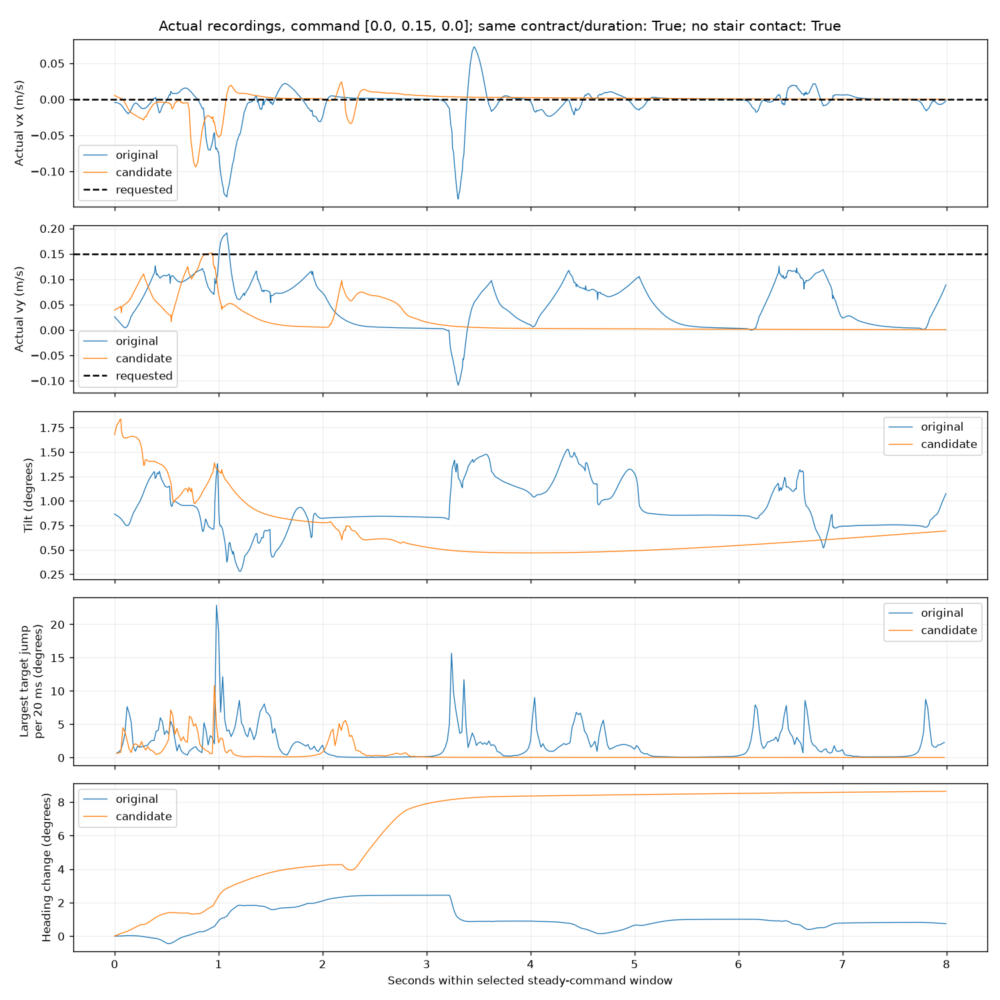

Command: [0.0, 0.15, 0.0]. Same recorded contract and full duration: True. No stair contact before/during either window: True.
Configuration differences: []. Too-short windows remain in the results and are not treated as an equal-duration comparison.
Manual keyboard ramp/start timing can differ despite equal steady requests. Retain failures; no significance or general success-rate claim from one pair. Compare jitter together with tracking, heading, falls/support, not only smoothness.
Good improvement means lower rapid joint motion and target jumps while tracking remains good and the robot stays upright. A stationary robot can have excellent smoothness but fail the task. Target second difference is a discrete acceleration-like quantity, not position jerk.
The candidate has 65.2% less joint-band vibration and 52.8% smaller maximum target jumps, but moves sideways 58.1% slower and has 20.7% higher tracking error. Neither tracks the 0.15 m/s request well.
In the candidate's last five selected seconds, actual vy averages just 0.00224 m/s while the request stays 0.15. Read velocity panel 2 together with target-jump panel 4: much of the smoothness accompanies nearly stopping. It turns +8.64 degrees versus +0.74 for the original.
Both checkpoint hashes and equal-window settings were verified, with no stair contact and no target clamping. This is one manually operated pair, not proof that one particular penalty caused the result. Next compare +Y 0.30 and negative-Y requests before adding stronger smoothness penalties.
| label | original | candidate |
|---|---|---|
| update | 90000 | 91000 |
| duration_s | 8.0 | 8.0 |
| mean_body_vx_m_s | -0.005469343795990277 | -0.0012665135838691832 |
| mean_body_vy_m_s | 0.0490807970742089 | 0.020566700719611385 |
| vx_rmse_m_s | 0.025312690737135084 | 0.01262295402701637 |
| vy_rmse_m_s | 0.11066741184911902 | 0.13354746623104916 |
| joint_8_30_hz_rms_deg | 0.14702818572457868 | 0.051192321172029036 |
| max_target_step_deg | 22.876262664794922 | 10.806663513183594 |
| p99_max_joint_target_step_deg | 11.695131301879883 | 5.926135063171387 |
| normalized_target_second_difference_cost | 0.16433859918445876 | 0.02216182056277976 |
| heading_change_deg | 0.7395345866967671 | 8.637146971569098 |
| max_tilt_deg | 1.5286598093068196 | 1.837022919758562 |
| any_joint_torque_clipped_fraction | 0.000625 | 0.0 |
